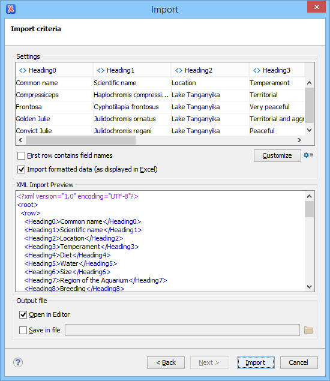

Import from MS Excel Files
Oxygen XML Editor provides several methods for importing MS Excel files into an XML file. The first method is to use the Oxygen XML Editor Smart Paste mechanism by simply copying data from Excel and pasting it into a document in Author mode (note that this is only supported in DITA, DocBook, TEI, JATS, and XHTML documents). You can also copy data from Excel and paste it into inserted cells in Grid mode, but this is a more manual process. If you want to import an entire Excel file, Oxygen XML Editor also offers a configurable import wizard that works with any type of XML document.
Smart Paste Method in Author Mode
If you are importing data into DITA, DocBook, TEI, JATS, or XHTML documents, you can open the Excel spreadsheet in your office application, copy its content, and simply paste it into your document in Author mode.
The Oxygen XML Editor Smart Paste mechanism will convert the pasted content to the equivalent XML markup and considers various pasting solutions to keep the resulting document valid, while preserving the original text styling (such as bold, italics, underline) and formatting (such as lists, tables, paragraphs).
Grid Mode Method
- Copy the particular cells from your Excel spreadsheet that you want to import into an XML file.
- Switch to Grid mode in Oxygen XML Editor.
- Expand the particular nodes and locate the nested table where you want to insert the copied cells.
- Right-click a particular row or column where you want to insert the data and select
 Insert
row or
Insert
row or  Insert column, depending on the structure of the
copied cells.
Insert column, depending on the structure of the
copied cells. - Paste the copied cells from the clipboard into the newly inserted cells in Grid mode.
- You may need to make some manual adjustments. For example, if the selection of copied cells contained an empty cell, Oxygen XML Editor might ignore that cell.
Import Wizard Method
By default, this method supports importing Excel 97/2000/XP/2003 formats out-of-the-box. To import spreadsheet data from Excel 2007 or newer, additional libraries are needed before using this procedure. See Import Data from MS Excel (2007 or Newer) for instructions on adding more libraries.
To use the Import wizard to import an Excel file into an XML file, follow these steps:
- Go to .
- Select the URL of the Excel file. The sheets of the document you are importing are presented in the Available Sheets section of this dialog box.
- Click the Next button to proceed to the next stage of the
wizard.
Figure 1. Import Wizard  -
Configure the settings for the conversion. This stage of the wizard offers the following options:
- Import settings section
- Presents the input data in a tabular form. By default, all data items are
converted to element content ( symbol), but this can be overridden by
clicking the individual column headers. Clicking a column header once causes the
data from this column to be converted to attribute values (
 symbol). Clicking a second time causes the column data to be ignored
(
symbol). Clicking a second time causes the column data to be ignored
( symbol) when generating the XML file. You can cycle through these
three options by continuing to click the column header.
symbol) when generating the XML file. You can cycle through these
three options by continuing to click the column header. - First row contains field names
- If this option is selected, the default column headers are replaced (where such information is available) by the content of the first row. In other words, the first row is interpreted as containing the field names. The changes are also visible in the preview panel.
- Customize
- This button opens a Presentation Names dialog box that allows you to edit the name, XML name, and conversion criterion for the root and row elements. The XML names can be edited by double-clicking the desired item and entering the label. The conversion criteria can also be modified by selecting one of the following option in the drop-down menu: ELEMENT, ATTRIBUTE, or SKIPPED.
 Import
Settings
Import
Settings- Clicking this button opens the Import preferences page that allows you to configure more import options.
- Import formatted data (as displayed in Excel)
- If this option is selected, the imported data retains the Excel data formatting (such as the representation of numeric values or dates). If deselected, the data formatting is not imported.
- XML Import Preview panel
- Contains an example of what the generated XML document will look like.
- Open in editor
- If selected, the new XML document created from the imported file is opened in the editor.
- Save in file
- If selected, the new XML document is saved in the specified path.
- Click Import to generate the XML document.
For more information about exchanging data between Oxygen XML Editor and spreadsheet applications, watch our video demonstration: